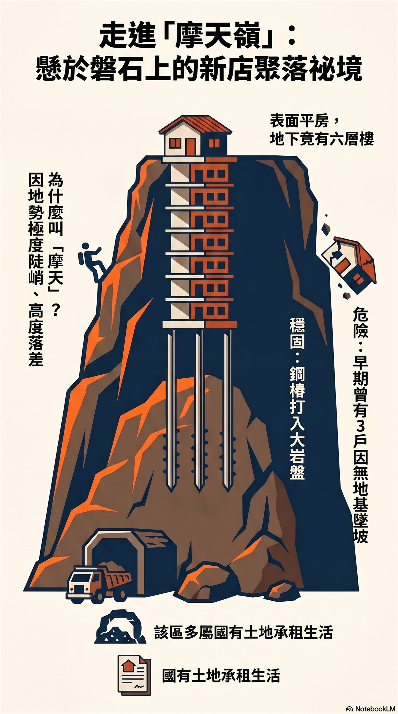

田野紀錄
把一棟屋子，放回坡地與時代裡
沿著新店溪畔回望摩天嶺，屋舍彷彿不是單單蓋在坡上，而是倚著岩盤、風雨與歲月慢慢站穩。陳啟川大哥說起建屋往事時，那些國有土地、水利地、道路拓寬與生活奔忙，便不再只是冷冷的制度名詞，而成了人們在山水邊安頓一家老小的用心與智慧。
1150507 陳啟川：盤石上的家
新店溪畔的摩天嶺
新店溪畔有一處被地方稱作「摩天嶺」的坡地。名字聽來帶著幾分傳奇，卻是走過的人都能立刻明白的地勢：坡勢陡峭，屋舍依著山壁與岩盤層層落下，從路面往下望，彷彿一不留神便會跌進溪谷與時間深處。
這一帶土地多與國有財產局、水利地相關，早年居民常以承租，或購買地上權利的方式在此落腳。許多退伍軍人也曾在這裡安身，把坡地邊緣搭成家，把不穩定的土地關係，過成一天一天的日常。
坡地上的風險與記憶
摩天嶺的居住經驗，並不只是高處望溪的風景。早期有些緊貼開天宮廟埕的房屋，因未向下開挖紮實地基，只以近乎懸空的方式搭建。當雨水滲入、土壤鬆動，或遇上地震搖晃，坡地便顯出它嚴厲的一面。
口述中提及，曾有三棟房屋整棟崩落的意外。事故之後，國有財產局收回土地，不再出租。原先居住其上的老兵，也帶著資金離開，返回大陸養老。這段記憶使摩天嶺不只是地名，也成為坡地生活風險與土地權屬變動的見證。
道路拓寬後的重建契機
後來，因道路拓寬工程，部分民房被拆去一半。對住戶而言，拆除既是損失，也意外成為重新安頓的契機。政府提供約五十萬元補貼，允許居民就地重建；屋舍也因此取得正式門牌與水電供應。
一條道路的拓寬，看似只是交通工程，卻改變了一戶人家的合法性、居住方式與生活條件。門牌與水電的取得，讓原本處在邊緣的坡地住居，慢慢被納入城市的日常秩序之中。
盤石地基與向下生長的家
陳啟川大哥提到，父親當年花費二百五十萬元，向一位士官長買下地上權利。為了讓房子能在陡峭地形中安穩立住，也為了居住安全，25 號與 27 號兩戶共同集資改建，並特別請來烏來一帶擅長山坡地建築的師傅施工。

房屋不是簡單地蓋在坡面上，而是打入三十多支鋼樁，將結構牢牢紮進堅硬的大岩石，也就是地方口述中反覆提到的「盤石」。這樣的建法，使屋舍在坡地上取得罕見的穩定；即使經歷 921 大地震，家具與結構仍安然無恙。
最特別的是它的垂直空間。若從馬路平面的大門看起，那裡彷彿是一樓；但順著地勢往下，房屋其實一層層向下延伸，深達地下六層。這種「向下生長」的房屋，正是摩天嶺地形與居民建屋智慧交會後，留下的特殊生活景觀。
一棟屋子的地方意義
盤石上的家，表面上說的是建築工法，實際上說的是人在坡地上尋找安定的故事。它牽涉國有土地與水利地，牽涉道路拓寬與補償，也牽涉老兵聚落、紅燈區消逝、煤礦坑道遺留，以及居民如何在不容易的地形裡，把生活一步步安放下來。
因此，這段口述不只是某戶人家的建屋回憶，也是新店溪畔聚落變遷的一個切面。站在今日的國校路與新店後街回望，摩天嶺的故事提醒我們：地方的歷史，常常藏在看似平凡的一扇門、一段坡、一根鋼樁，與一塊撐住家屋的岩盤之中。